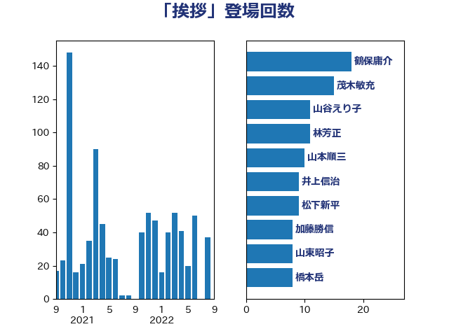

単語「挨拶」

| 鶴保庸介 | 自由民主党 | 18 回 |
| 茂木敏充 | 自由民主党 | 15 回 |
| 山谷えり子 | 自由民主党 | 11 回 |
| 林芳正 | 自由民主党 | 11 回 |
| 山本順三 | 自由民主党 | 10 回 |
| 井上信治 | 自由民主党 | 9 回 |
| 松下新平 | 自由民主党 | 9 回 |
| 加藤勝信 | 自由民主党 | 8 回 |
| 山東昭子 | 自由民主党 | 8 回 |
| 橋本岳 | 自由民主党 | 8 回 |
| 上田英俊 | 自由民主党 | 7 回 |
| 宮本岳志 | 日本共産党 | 7 回 |
| 宮沢洋一 | 自由民主党 | 7 回 |
| 山田宏 | 自由民主党 | 7 回 |
| 木原誠二 | 自由民主党 | 7 回 |
| 森英介 | 自由民主党 | 7 回 |
| 永岡桂子 | 自由民主党 | 7 回 |
| 義家弘介 | 自由民主党 | 7 回 |
| 鈴木宗男 | 日本維新の会 | 7 回 |
| 青木一彦 | 自由民主党 | 7 回 |
| 末松信介 | 自由民主党 | 6 回 |
| 松島みどり | 自由民主党 | 6 回 |
| 根本匠 | 自由民主党 | 6 回 |
| 矢倉克夫 | 公明党 | 6 回 |
| 石井浩郎 | 自由民主党 | 6 回 |
| 豊田俊郎 | 自由民主党 | 6 回 |
| 長島昭久 | 自由民主党 | 6 回 |
| 長浜博行 | 無所属 | 6 回 |
| 長谷川岳 | 自由民主党 | 6 回 |
| 馬場成志 | 自由民主党 | 6 回 |
| 古川俊治 | 自由民主党 | 5 回 |
| 吉田忠智 | 立憲民主党 | 5 回 |
| 小里泰弘 | 自由民主党 | 5 回 |
| 岡本あき子 | 立憲民主党 | 5 回 |
| 平口洋 | 自由民主党 | 5 回 |
| 杉尾秀哉 | 立憲民主党 | 5 回 |
| 松村祥史 | 自由民主党 | 5 回 |
| 森屋宏 | 自由民主党 | 5 回 |
| 橋本聖子 | 無所属 | 5 回 |
| 浜田靖一 | 自由民主党 | 5 回 |
| 渡辺博道 | 自由民主党 | 5 回 |
| 田嶋要 | 立憲民主党 | 5 回 |
| 福岡資麿 | 自由民主党 | 5 回 |
| 細田博之 | 自由民主党 | 5 回 |
| 萩生田光一 | 自由民主党 | 5 回 |
| 西銘恒三郎 | 自由民主党 | 5 回 |
| 赤澤亮正 | 自由民主党 | 5 回 |
| 赤羽一嘉 | 公明党 | 5 回 |
| 近藤和也 | 立憲民主党 | 5 回 |
| 金田勝年 | 自由民主党 | 5 回 |
| 伊藤忠彦 | 自由民主党 | 4 回 |
| 佐々木さやか | 公明党 | 4 回 |
| 吉川沙織 | 立憲民主党 | 4 回 |
| 坂本哲志 | 自由民主党 | 4 回 |
| 山本香苗 | 公明党 | 4 回 |
| 河野太郎 | 自由民主党 | 4 回 |
| 田村憲久 | 自由民主党 | 4 回 |
| 石田真敏 | 自由民主党 | 4 回 |
| あべ俊子 | 自由民主党 | 3 回 |
| 上月良祐 | 自由民主党 | 3 回 |
| 上野賢一郎 | 自由民主党 | 3 回 |
| 伊東良孝 | 自由民主党 | 3 回 |
| 伊波洋一 | 無所属 | 3 回 |
| 伊藤岳 | 日本共産党 | 3 回 |
| 太田房江 | 自由民主党 | 3 回 |
| 宮路拓馬 | 自由民主党 | 3 回 |
| 小西洋之 | 立憲民主党 | 3 回 |
| 山口俊一 | 自由民主党 | 3 回 |
| 岸田文雄 | 自由民主党 | 3 回 |
| 平井卓也 | 自由民主党 | 3 回 |
| 徳永エリ | 立憲民主党 | 3 回 |
| 斉藤鉄夫 | 公明党 | 3 回 |
| 斎藤嘉隆 | 立憲民主党 | 3 回 |
| 新妻秀規 | 公明党 | 3 回 |
| 松野博一 | 自由民主党 | 3 回 |
| 横沢高徳 | 立憲民主党 | 3 回 |
| 武田良太 | 自由民主党 | 3 回 |
| 海江田万里 | 立憲民主党 | 3 回 |
| 舟山康江 | 国民民主党 | 3 回 |
| 若宮健嗣 | 自由民主党 | 3 回 |
| 西村康稔 | 自由民主党 | 3 回 |
| 西村智奈美 | 立憲民主党 | 3 回 |
| 金子恭之 | 自由民主党 | 3 回 |
| 鈴木馨祐 | 自由民主党 | 3 回 |
| 青山大人 | 立憲民主党 | 3 回 |
| 高鳥修一 | 自由民主党 | 3 回 |
| あかま二郎 | 自由民主党 | 2 回 |
| 三ッ林裕巳 | 自由民主党 | 2 回 |
| 上田清司 | 国民民主党 | 2 回 |
| 中根一幸 | 自由民主党 | 2 回 |
| 丸川珠代 | 自由民主党 | 2 回 |
| 丹羽秀樹 | 自由民主党 | 2 回 |
| 井上英孝 | 日本維新の会 | 2 回 |
| 伊藤孝恵 | 国民民主党 | 2 回 |
| 佐藤信秋 | 自由民主党 | 2 回 |
| 勝部賢志 | 立憲民主党 | 2 回 |
| 北村経夫 | 自由民主党 | 2 回 |
| 古屋範子 | 公明党 | 2 回 |
| 古川禎久 | 自由民主党 | 2 回 |
| 吉川赳 | 無所属 | 2 回 |
| 吉田宣弘 | 公明党 | 2 回 |
| 堀内詔子 | 自由民主党 | 2 回 |
| 大塚耕平 | 国民民主党 | 2 回 |
| 奥野総一郎 | 立憲民主党 | 2 回 |
| 宮内秀樹 | 自由民主党 | 2 回 |
| 小野寺五典 | 自由民主党 | 2 回 |
| 山添拓 | 日本共産党 | 2 回 |
| 平木大作 | 公明党 | 2 回 |
| 手塚仁雄 | 立憲民主党 | 2 回 |
| 打越さく良 | 立憲民主党 | 2 回 |
| 本田顕子 | 自由民主党 | 2 回 |
| 梅村聡 | 日本維新の会 | 2 回 |
| 森まさこ | 自由民主党 | 2 回 |
| 榛葉賀津也 | 国民民主党 | 2 回 |
| 浅田均 | 日本維新の会 | 2 回 |
| 深澤陽一 | 自由民主党 | 2 回 |
| 田島麻衣子 | 立憲民主党 | 2 回 |
| 田村まみ | 国民民主党 | 2 回 |
| 石原宏高 | 自由民主党 | 2 回 |
| 石橋通宏 | 立憲民主党 | 2 回 |
| 紙智子 | 日本共産党 | 2 回 |
| 美延映夫 | 日本維新の会 | 2 回 |
| 舩後靖彦 | れいわ新選組 | 2 回 |
| 菅義偉 | 自由民主党 | 2 回 |
| 藤巻健太 | 日本維新の会 | 2 回 |
| 西田実仁 | 公明党 | 2 回 |
| 赤池誠章 | 自由民主党 | 2 回 |
| 越智隆雄 | 自由民主党 | 2 回 |
| 野田国義 | 立憲民主党 | 2 回 |
| 金子恵美 | 立憲民主党 | 2 回 |
| 長妻昭 | 立憲民主党 | 2 回 |
| 長峯誠 | 自由民主党 | 2 回 |
| 関芳弘 | 自由民主党 | 2 回 |
| 阿部知子 | 立憲民主党 | 2 回 |
| 青木愛 | 立憲民主党 | 2 回 |
| 馬淵澄夫 | 立憲民主党 | 2 回 |
| 高木毅 | 自由民主党 | 2 回 |
| 高良鉄美 | 無所属 | 2 回 |
| 麻生太郎 | 自由民主党 | 2 回 |
| 上川陽子 | 自由民主党 | 1 回 |
| 中山展宏 | 自由民主党 | 1 回 |
| 中川正春 | 立憲民主党 | 1 回 |
| 中村裕之 | 自由民主党 | 1 回 |
| 中谷真一 | 自由民主党 | 1 回 |
| 今枝宗一郎 | 自由民主党 | 1 回 |
| 伊藤達也 | 自由民主党 | 1 回 |
| 原口一博 | 立憲民主党 | 1 回 |
| 古賀友一郎 | 自由民主党 | 1 回 |
| 吉田はるみ | 立憲民主党 | 1 回 |
| 和田義明 | 自由民主党 | 1 回 |
| 嘉田由紀子 | 無所属 | 1 回 |
| 國重徹 | 公明党 | 1 回 |
| 土屋品子 | 自由民主党 | 1 回 |
| 城内実 | 自由民主党 | 1 回 |
| 塩田博昭 | 公明党 | 1 回 |
| 大塚拓 | 自由民主党 | 1 回 |
| 大家敏志 | 自由民主党 | 1 回 |
| 大岡敏孝 | 自由民主党 | 1 回 |
| 大西健介 | 立憲民主党 | 1 回 |
| 大西英男 | 自由民主党 | 1 回 |
| 安住淳 | 立憲民主党 | 1 回 |
| 安達澄 | 無所属 | 1 回 |
| 室井邦彦 | 日本維新の会 | 1 回 |
| 小倉將信 | 自由民主党 | 1 回 |
| 小寺裕雄 | 自由民主党 | 1 回 |
| 小川淳也 | 立憲民主党 | 1 回 |
| 小沼巧 | 立憲民主党 | 1 回 |
| 尾辻秀久 | 無所属 | 1 回 |
| 山下芳生 | 日本共産党 | 1 回 |
| 山下雄平 | 自由民主党 | 1 回 |
| 山口那津男 | 公明党 | 1 回 |
| 山本剛正 | 日本維新の会 | 1 回 |
| 山本太郎 | れいわ新選組 | 1 回 |
| 山際大志郎 | 自由民主党 | 1 回 |
| 岩屋毅 | 自由民主党 | 1 回 |
| 岸信夫 | 自由民主党 | 1 回 |
| 岸真紀子 | 立憲民主党 | 1 回 |
| 島尻安伊子 | 自由民主党 | 1 回 |
| 工藤彰三 | 自由民主党 | 1 回 |
| 新垣邦男 | 立憲民主党 | 1 回 |
| 木原稔 | 自由民主党 | 1 回 |
| 杉久武 | 公明党 | 1 回 |
| 村井英樹 | 自由民主党 | 1 回 |
| 東徹 | 日本維新の会 | 1 回 |
| 枝野幸男 | 立憲民主党 | 1 回 |
| 梅村みずほ | 日本維新の会 | 1 回 |
| 森本真治 | 立憲民主党 | 1 回 |
| 江渡聡徳 | 自由民主党 | 1 回 |
| 沢田良 | 日本維新の会 | 1 回 |
| 河西宏一 | 公明党 | 1 回 |
| 浜地雅一 | 公明党 | 1 回 |
| 渡海紀三朗 | 自由民主党 | 1 回 |
| 渡辺周 | 立憲民主党 | 1 回 |
| 牧原秀樹 | 自由民主党 | 1 回 |
| 猪口邦子 | 自由民主党 | 1 回 |
| 田村智子 | 日本共産党 | 1 回 |
| 石井準一 | 自由民主党 | 1 回 |
| 石川昭政 | 自由民主党 | 1 回 |
| 神田潤一 | 自由民主党 | 1 回 |
| 福田昭夫 | 立憲民主党 | 1 回 |
| 稲津久 | 公明党 | 1 回 |
| 笠井亮 | 日本共産党 | 1 回 |
| 細田健一 | 自由民主党 | 1 回 |
| 菊田真紀子 | 立憲民主党 | 1 回 |
| 葉梨康弘 | 自由民主党 | 1 回 |
| 薗浦健太郎 | 自由民主党 | 1 回 |
| 藤原崇 | 自由民主党 | 1 回 |
| 藤田文武 | 日本維新の会 | 1 回 |
| 赤木正幸 | 日本維新の会 | 1 回 |
| 進藤金日子 | 自由民主党 | 1 回 |
| 酒井庸行 | 自由民主党 | 1 回 |
| 野上浩太郎 | 自由民主党 | 1 回 |
| 野村哲郎 | 自由民主党 | 1 回 |
| 鈴木義弘 | 国民民主党 | 1 回 |
| 階猛 | 立憲民主党 | 1 回 |
| 青山周平 | 自由民主党 | 1 回 |
| 音喜多駿 | 日本維新の会 | 1 回 |
| 高木かおり | 日本維新の会 | 1 回 |
| 高木啓 | 自由民主党 | 1 回 |
| 齋藤健 | 自由民主党 | 1 回 |